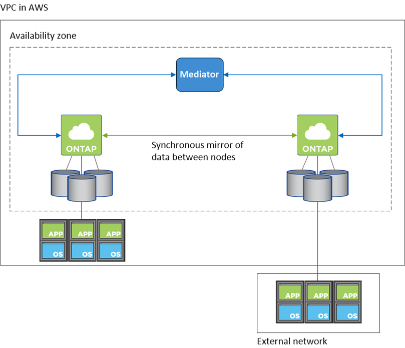
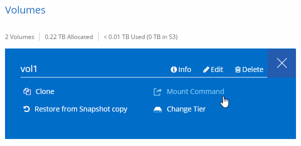

版本資訊
版本資訊
AWS 中的高可用度配對
 建議變更
建議變更
支援高可用度（ HA ）組態、可提供不中斷營運及容錯功能。 Cloud Volumes ONTAP在 AWS 中、資料會在兩個節點之間同步鏡射。
總覽
在 AWS 中 Cloud Volumes ONTAP 、不含下列元件：
-
兩 Cloud Volumes ONTAP 個彼此同步鏡射資料的鏡射節點。
-
一種中介執行個體、可在節點之間提供通訊通道、以協助儲存接管和恢復程序。

|
中介執行個體在 T2.Micro 執行個體上執行 Linux 作業系統、並使用一個 EBS 磁碟、大約 8 GB 。 |
儲存設備接管與恢復
如果某個節點發生故障、另一個節點可以提供資料給其合作夥伴、以提供持續的資料服務。用戶端可以從合作夥伴節點存取相同的資料、因為資料會同步鏡射至合作夥伴。
節點重新開機後、合作夥伴必須重新同步資料、才能退回儲存設備。重新同步資料所需的時間、取決於節點當機時資料的變更量。
RPO 和 RTO
HA 組態可維持資料的高可用度、如下所示：
-
恢復點目標（ RPO ）為 0 秒。您的資料交易一致、不會遺失任何資料。
-
恢復時間目標（ RTO ）為 60 秒。發生中斷時、資料應可在 60 秒內取得。
HA 部署模式
您可以在多個可用度區域（ AZs ）或單一 AZ 中部署 HA 組態、確保資料的高可用度。您應該檢閱每個組態的詳細資料、以選擇最符合您需求的組態。
多個可用度區域中的可用度Cloud Volumes ONTAP
在多個可用度區域（ AZs ）中部署 HA 組態、可確保當 AZ 或執行 Cloud Volumes ONTAP 此節點的執行個體發生故障時、資料的高可用度。您應該瞭解 NAS IP 位址如何影響資料存取和儲存容錯移轉。
NFS 與 CIFS 資料存取
當 HA 組態分佈於多個可用區域時、 _浮 點 IP 位址 _ 可啟用 NAS 用戶端存取。在發生故障時、浮動 IP 位址必須位於該區域所有 VPC 的 CIDR 區塊之外、可以在節點之間移轉。除非您、否則 VPC 外部的用戶端無法原生存取這些功能 "設定 AWS 傳輸閘道"。
如果您無法設定傳輸閘道、則 VPC 外部的 NAS 用戶端可使用私有 IP 位址。不過、這些 IP 位址是靜態的、無法在節點之間進行容錯移轉。
在跨多個可用區域部署 HA 組態之前、您應該先檢閱浮動 IP 位址和路由表的需求。部署組態時、您必須指定浮動 IP 位址。私有 IP 位址是由 Cloud Manager 自動建立。
如需詳細資訊、請參閱 "AWS 在 Cloud Volumes ONTAP 多個 AZs 中的功能需求"。
iSCSI 資料存取
由於 iSCSI 不使用浮動 IP 位址、因此跨 VPC 資料通訊並非問題。
iSCSI的儲存接管與恢復
對於 iSCSI 、 Cloud Volumes ONTAP Reality 使用多重路徑 I/O （ MPIO ）和非對稱邏輯單元存取（ ALUA ）來管理主動最佳化和非最佳化路徑之間的路徑容錯移轉。
|
|
如需哪些特定主機組態支援 ALUA 的相關資訊、請參閱 "NetApp 互通性對照表工具" 以及主機作業系統的主機公用程式安裝與設定指南。 |
NAS的儲存接管與恢復
在使用浮動 IP 的 NAS 組態中進行接管時、用戶端用來存取資料的節點浮動 IP 位址會移至另一個節點。下圖說明使用浮動 IP 的 NAS 組態中的儲存設備接管。如果節點 2 停機、節點 2 的浮動 IP 位址會移至節點 1 。

如果發生故障、用於外部 VPC 存取的 NAS 資料 IP 將無法在節點之間移轉。如果節點離線、您必須使用另一個節點上的 IP 位址、將磁碟區手動重新掛載至 VPC 外部的用戶端。
故障節點恢復上線後、請使用原始 IP 位址將用戶端重新掛載至磁碟區。此步驟是為了避免在兩個 HA 節點之間傳輸不必要的資料、這可能會對效能和穩定性造成重大影響。
您可以從 Cloud Manager 輕鬆識別正確的 IP 位址、方法是選取磁碟區、然後按一下 * Mount Command* 。
在單一可用度區中使用的解決方法 Cloud Volumes ONTAP
在單一可用度區域（ AZ ）中部署 HA 組態、可確保執行 Cloud Volumes ONTAP 此節點的執行個體故障時、資料的高可用度。所有資料均可從 VPC 外部原生存取。
|
|
Cloud Manager 會建立一個 "AWS 分散配置群組" 然後啟動該放置群組中的兩個 HA 節點。放置群組可將執行個體分散到不同的基礎硬體、藉此降低同時發生故障的風險。此功能可從運算角度而非磁碟故障角度改善備援。 |
資料存取
由於此組態位於單一 AZ 、因此不需要浮動 IP 位址。您可以使用相同的 IP 位址、從 VPC 內部和 VPC 外部存取資料。
下圖顯示單一 AZ 中的 HA 組態。資料可從 VPC 內部及 VPC 外部存取。

儲存設備接管與恢復
對於 iSCSI 、 Cloud Volumes ONTAP Reality 使用多重路徑 I/O （ MPIO ）和非對稱邏輯單元存取（ ALUA ）來管理主動最佳化和非最佳化路徑之間的路徑容錯移轉。
|
|
如需哪些特定主機組態支援 ALUA 的相關資訊、請參閱 "NetApp 互通性對照表工具" 以及主機作業系統的主機公用程式安裝與設定指南。 |
對於 NAS 組態、如果發生故障、資料 IP 位址可以在 HA 節點之間移轉。如此可確保用戶端存取儲存設備。
儲存設備如何在 HA 配對中運作
不像 ONTAP 是一個叢集、 Cloud Volumes ONTAP 在節點之間不會共享使用一個不一致的功能。相反地、資料會在節點之間同步鏡射、以便在發生故障時能夠使用資料。
儲存配置
當您建立新的磁碟區並需要額外的磁碟時、 Cloud Manager 會將相同數量的磁碟分配給兩個節點、建立鏡射的 Aggregate 、然後建立新的磁碟區。例如、如果磁碟區需要兩個磁碟、 Cloud Manager 會為每個節點分配兩個磁碟、總共四個磁碟。
儲存組態
您可以使用 HA 配對做為主動 - 主動式組態、讓兩個節點都能將資料提供給用戶端、或做為主動 - 被動式組態、被動節點只有在接管主動節點的儲存設備時、才會回應資料要求。
|
|
只有在儲存系統檢視中使用 Cloud Manager 時、才能設定雙主動式組態。 |
HA 組態的效能期望
使用不同步的功能、可在節點之間複寫資料、進而消耗網路頻寬。 Cloud Volumes ONTAP因此、相較於單一節點 Cloud Volumes ONTAP 的 VMware 、您可以預期下列效能：
-
對於僅從一個節點提供資料的 HA 組態、讀取效能可媲美單一節點組態的讀取效能、而寫入效能則較低。
-
對於同時提供兩個節點資料的 HA 組態、讀取效能高於單一節點組態的讀取效能、寫入效能相同或更高。
如需 Cloud Volumes ONTAP 更多關於效能的詳細資訊、請參閱 "效能"。
用戶端存取儲存設備
用戶端應使用磁碟區所在節點的資料 IP 位址來存取 NFS 和 CIFS 磁碟區。如果 NAS 用戶端使用合作夥伴節點的 IP 位址來存取磁碟區、則兩個節點之間的流量會降低效能。

|
如果您在 HA 配對中的節點之間移動磁碟區、則應使用其他節點的 IP 位址來重新掛載磁碟區。否則、您可能會遇到效能降低的情況。如果用戶端支援 NFSv4 轉介或 CIFS 資料夾重新導向、您可以在 Cloud Volumes ONTAP 支撐系統上啟用這些功能、以避免重新掛載磁碟區。如需詳細資料、請參閱 ONTAP 《關於我們的資料》。 |
您可以從 Cloud Manager 輕鬆識別正確的 IP 位址：
